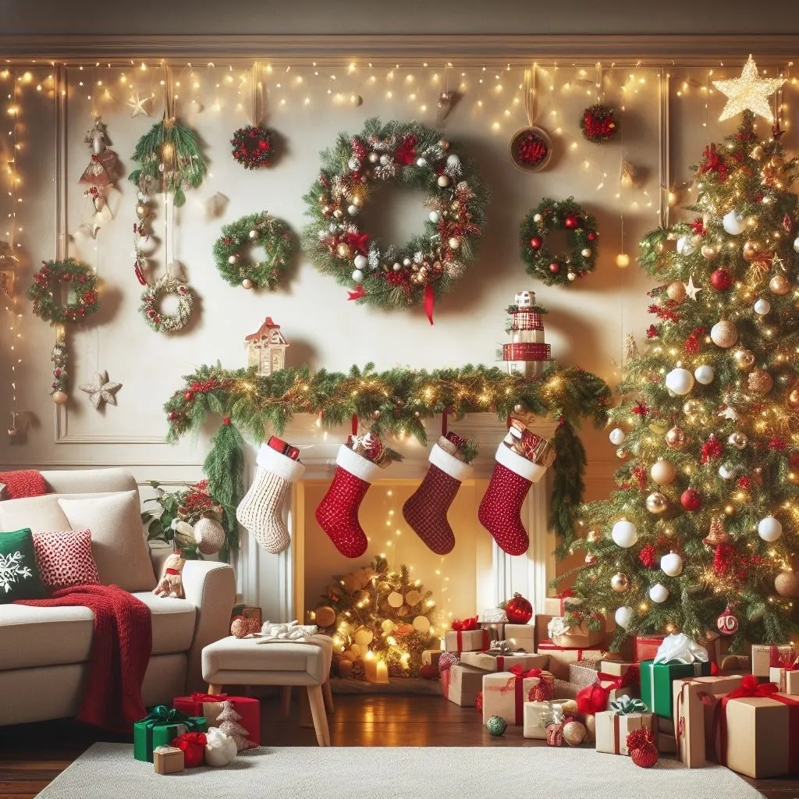
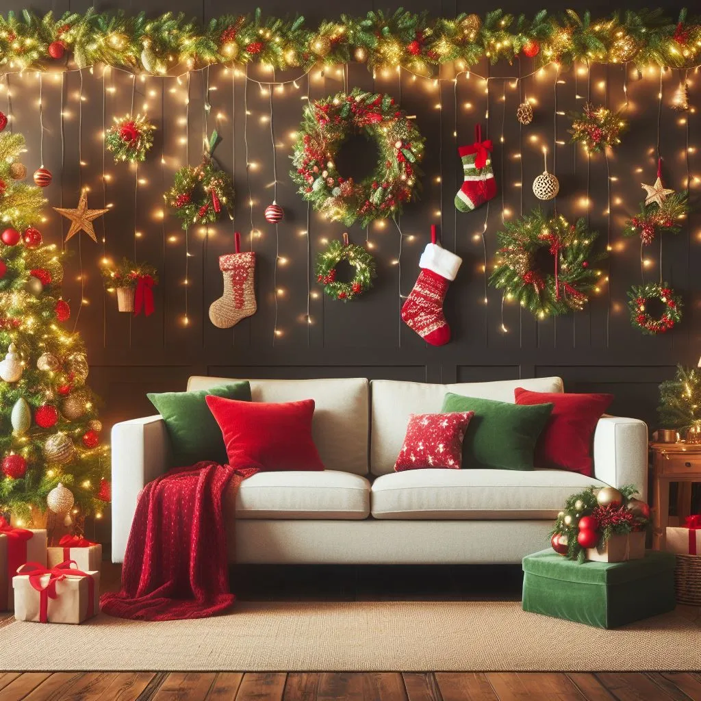

How to Transform Your Living Room into a Winter Wonderland with Christmas Decorations
Transform your living room into a magical winter wonderland with dazzling Christmas decorations that will evoke the spirit of the season. As the temperatures drop and the holiday cheer fills the air, there’s no better time to cozy up indoors and create a festive ambiance that will delight both family and guests.
From twinkling lights, including the best curtain lights, and shimmering ornaments to plush throws and scented candles, there are countless ways to infuse your Christmas decoration in living room with the enchantment of the holidays. Whether you prefer a traditional red and green color scheme or a more modern and minimalist approach, the key is to find decorations that reflect your personal style and create a warm and inviting atmosphere.
In this article, we will guide you through the process of transforming your living room into a winter wonderland, providing inspiration and practical tips along the way. Discover the power of statement pieces, clever lighting techniques, and the art of balancing festive accents without overwhelming the space. Let the magic of Christmas spread throughout your home, starting with your living room. Get ready to embrace the joy and beauty of the season!
Choosing a theme for your Christmas Decoration in Living Room
When transforming your living room into a winter wonderland, it’s important to choose a theme that will tie all the decorations together. Whether you prefer a rustic, Scandinavian-inspired look or a glamorous, silver-and-gold theme, selecting a cohesive theme will ensure a harmonious and visually stunning space.
Consider the overall style of your home and choose a theme that complements it. For a traditional feel, opt for classic Christmas colors like red, green, and gold. If you’re looking for a more modern and minimalist approach, try a monochromatic color scheme with touches of metallic accents. Whichever theme you choose, make sure it reflects your personality and creates a sense of magic and wonder.
Remember to consider the size of your living room when selecting a theme. A small space may benefit from a more minimalist approach, while a larger room can handle a more extravagant and grandiose theme. Let your imagination run wild and choose a theme that will bring joy and delight to all who enter your winter wonderland.
Essential Christmas decorations for your living room
To create a winter wonderland in your living room, start with the essential Christmas decorations that will set the stage for the magical transformation. Here are a few must-have items:
-
Christmas Tree: The centerpiece of any winter wonderland is the Christmas tree. Choose a tree that fits the size and style of your living room. Whether you prefer a real or artificial tree, make sure it’s lush and full. Decorate it with lights, ornaments, and a tree topper that complements your chosen theme.
-
Twinkling Lights: Stringing lights around your living room will instantly add a warm and cozy ambiance. Opt for white or colored lights, depending on your theme. Wrap them around your tree, drape them along your mantel, and weave them through garlands for a magical glow.
-
Garlands: Garlands are a versatile decoration that can be used in various ways. Hang them along stair railings, drape them over your fireplace mantel, or use them to adorn windows and doorways. Choose garlands made of fresh or artificial greenery, or opt for ones with festive additions like pinecones and berries.
-
Wreaths: Hang a wreath on your front door to welcome guests into your winter wonderland. You can also use wreaths to decorate walls, mirrors, and windows within your living room. Choose wreaths made of natural materials like pine branches and berries, or go for a more whimsical design with ornaments and ribbons.
-
Stockings: Hang personalized stockings by the fireplace for a touch of Christmas tradition. Fill them with small gifts and treats to surprise your loved ones on Christmas morning. Choose stockings that match your theme, whether they’re traditional red and green or modern and monochromatic.
Remember, the key to creating a winter wonderland is to balance your Christmas decoration in living room and create a cohesive look. Choose items that complement each other and avoid overcrowding your living room with too many decorations. Let each piece shine and contribute to the overall magical atmosphere.

Creating a cozy atmosphere with lighting and candles
One of the most important aspects of transforming your living room into a winter wonderland is creating a cozy atmosphere with the right lighting and candles. The right lighting can make all the difference in setting the mood and evoking a sense of warmth and intimacy.
Start by using a combination of ambient, task, and accent lighting. Ambient lighting provides overall illumination and can be achieved with ceiling fixtures, chandeliers, or pendant lights. Task lighting focuses on specific areas and can be achieved with table lamps or floor lamps. Accent lighting highlights certain features or objects and can be achieved with spotlights or wall sconces.
In addition to artificial lighting, candles can add a magical and intimate touch to your living room. Place scented candles in winter-inspired fragrances like cinnamon, pine, or vanilla to create a cozy and inviting atmosphere. Use candle holders and lanterns to add a decorative element and ensure safety.
Remember to dim the lights and light the candles in the evening to create a warm and enchanting ambiance. The soft glow of candlelight combined with the twinkle of Christmas lights will transport you and your guests to a winter wonderland.

Adding sparkle with ornaments and garlands
Ornaments and garlands are essential for adding sparkle and charm to your Christmas decoration in living room. Whether you choose traditional or modern designs, these decorations will bring life and personality to your living room.
When it comes to ornaments, the options are endless. Hang them on your Christmas tree, place them in bowls or vases as table centerpieces, or use them to adorn your mantel. Choose ornaments that match your chosen theme and color scheme. If you’re feeling crafty, you can even create your own personalized ornaments using materials like clay or felt.
Garlands are another versatile decoration that can be used in various ways. Drape them along your mantel, hang them from your staircase, or use them to frame windows and doorways. Opt for garlands made of natural materials like pine branches and berries for a traditional look, or go for metallic garlands for a more modern and glamorous feel.
Remember to distribute ornaments and garlands evenly throughout your living room to create a balanced and cohesive look. Don’t be afraid to get creative and think outside the box when it comes to placement and arrangement. Let your imagination run wild and let the sparkle of these Christmas decoration in living room bring joy and wonder to your winter wonderland.
Decorating the Christmas tree as the centerpiece
No winter wonderland is complete without a beautifully decorated Christmas tree as the centerpiece of your living room. Follow these steps to create a stunning tree that will be the envy of all your guests:
-
Choose a theme: Select a theme for your tree that complements the overall style of your living room. This will guide your choice of ornaments, lights, and tree topper.
-
Light it up: Start by stringing lights around your tree. Use either white or colored lights, depending on your theme. Start from the bottom and work your way up, making sure the lights are evenly distributed.
-
Hang the ornaments: Hang ornaments of different shapes, sizes, and textures on your tree. Start with larger ornaments and place them evenly around the tree. Fill in the gaps with smaller ornaments. For a more cohesive look, stick to a color scheme or theme.
-
Add a tree topper: Place a tree topper that complements your chosen theme at the very top of your tree. This can be a star, an angel, or any other decorative item that adds the finishing touch.
-
Finish with garlands and ribbons: Wrap garlands and ribbons around your tree to add texture and visual interest. Opt for garlands made of natural materials like pine branches or metallic garlands for a more glamorous look.
Remember to step back and assess your tree as you decorate it. Make adjustments as needed to ensure a balanced and visually appealing result. Once your tree is complete, stand back and admire the beauty and magic it brings to your living room.
Incorporating festive colors and patterns into your living room decor
To fully transform your living room into a winter wonderland, incorporate festive colors and patterns into your overall decor. These additions will create a cohesive and visually appealing space that reflects the spirit of the season.
Start by choosing a color scheme that complements your chosen theme for the Chr. Traditional Christmas colors like red, green, and gold are always a safe bet. For a more modern and minimalist approach, opt for a monochromatic color scheme with touches of metallic accents. Use these colors throughout your living room in various ways, such as on throw pillows, blankets, curtains, and tabletop decorations.
In addition to colors, patterns can also add a festive touch to your living room decor. Consider incorporating patterns like plaid, houndstooth, or snowflake prints into your throw pillows, rugs, or curtains. These patterns will evoke a sense of coziness and winter charm.
Remember to balance the use of colors and patterns to avoid overwhelming your living room. Focus on key areas like the sofa, coffee table, and mantel to make a visual impact. Let the colors and patterns create a sense of joy and celebration in your winter wonderland.
DIY Christmas decorations and crafts for a personal touch
Adding a personal touch to your winter wonderland can be achieved through DIY Christmas decorations and crafts. These handmade creations will not only add charm and uniqueness to your living room but also provide an opportunity for fun and creativity.
Consider making your own wreaths, ornaments, and garlands using materials like pinecones, twigs, ribbons, and fabric. You can also create festive centerpieces using candles, pine branches, and berries. Get the whole family involved in these DIY projects and enjoy the process of making memories together.
If you’re not the crafty type, there are plenty of DIY kits and pre-made decorations available that can be customized to your liking. These kits often include everything you need to create beautiful and personalized decorations without the hassle of starting from scratch.
Remember, the goal of DIY decorations is to add a personal touch to your winter wonderland. Don’t worry about perfection—embrace imperfections and let your creativity shine through. These handmade creations will be cherished for years to come and add a special touch to your living room decor.
Tips for organizing and storing Christmas decorations
Once the holiday season comes to an end, it’s important to have a plan for organizing and storing your Christmas decorations. Proper organization will ensure that your decorations remain in good condition and are easily accessible for future use.
Start by decluttering and purging any decorations that are broken or no longer bring you joy. Sort your remaining decorations by category, such as ornaments, lights, garlands, and tree toppers. Use clear plastic bins or storage boxes with dividers to keep similar items together and prevent them from getting tangled or damaged.
Label each storage box or bin with its contents to easily identify them next year. Consider using color-coded labels or stickers to further organize your decorations. Store your boxes in a cool, dry place where they won’t be exposed to extreme temperatures or moisture.
To protect delicate items like ornaments, wrap them individually in tissue paper or bubble wrap before placing them in storage. You can also use egg cartons or specialized ornament storage containers to keep them safe and secure.
Remember to take extra care when storing lights to prevent them from tangling. Use cord winders or wrap them around pieces of cardboard to keep them organized. Store lights in a separate box to avoid them getting tangled with other decorations.
By following these organizing and storing tips, you’ll ensure that your Christmas decorations are ready for the next holiday season. Proper storage will save you time and frustration when it’s time to transform your living room into a winter wonderland again.
Conclusion: Enjoying your transformed winter wonderland living room
In conclusion, as we’ve explored the magical journey of transforming your living room into a winter wonderland with Christmas decorations, it’s clear that a little creativity and festive spirit can go a long way in creating a warm and inviting atmosphere for the holiday season.
Whether you prefer a traditional look with evergreen garlands and classic ornaments or a more modern approach with trendy color palettes, the key is to let your imagination run wild. The twinkling lights, cozy blankets, and charming details will undoubtedly make your living room a hub of holiday cheer, perfect for family gatherings and cozy nights in.
And as you embark on this joyful decorating adventure, don’t forget to check out our another blog post on Christmas decorations in the dining room for more tips and inspiration on extending the magic of the season to every corner of your home. So, stay tuned for more decorating ideas and let the spirit of the holidays infuse every room in your house.
Disclaimer:
This post contains links that will redirect you to the products page. I get commissions for purchases made through links in this post. As an Amazon Associate, I earn from qualifying purchases.